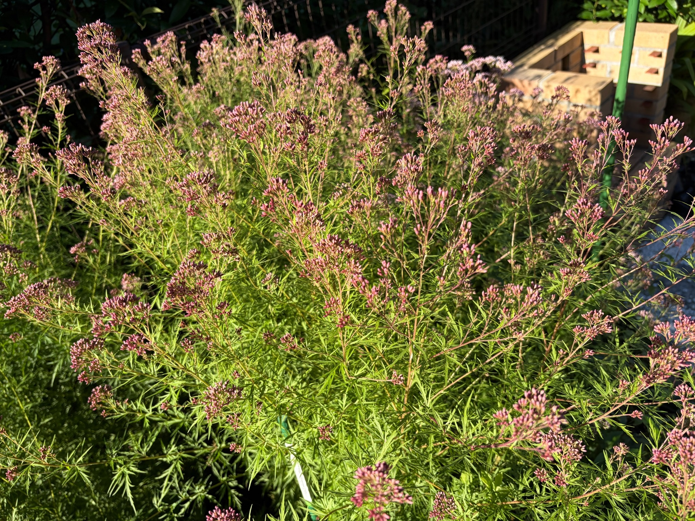
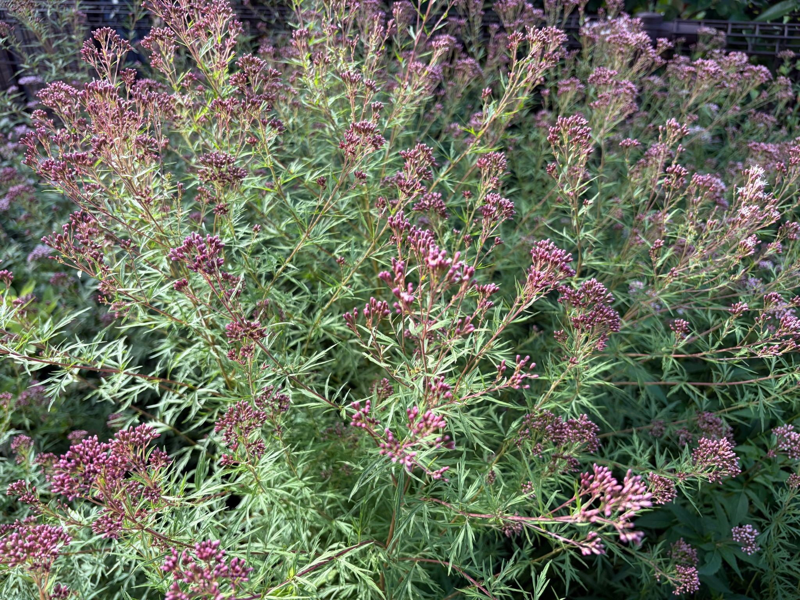

2026年10月12日 赤紫色の蕾が広がる羽衣と、アサギマダラの飛来
10月12日、庭にアサギマダラが2匹飛来しました。アサギマダラが訪れる庭を目指して育ててきたフジバカマ。その姿を実際に庭で見られたことは、育ててきた楽しみを感じる出来事になりました。
この日の羽衣は、細かく切れ込んだ緑の葉を豊かに茂らせ、数多くの枝先に赤紫色の蕾をつけていました。枝分かれした茎の先に小さな蕾が集まり、株の手前から奥まで、あちこちに花房が広がっています。
写真1：株全体に広がる花房
株全体を見ると、細かな葉の間から多数の茎が伸び、それぞれの枝先に花房がついています。花房は一か所に集まるのではなく、高さや向きを変えながら株全体に広がり、羽衣らしい繊細な葉姿に赤紫色が重なっています。
写真では、まだ閉じた蕾が多く見られます。蕾は細長く、枝先にまとまってついていますが、花房ごとに大きさや密集の仕方が異なります。白い糸状の花が株全体を覆うような咲き方には至っておらず、この日は、開花した花よりも赤紫色の蕾が目立つ状態でした。
葉も多く残っているため、花房だけが浮き上がるのではなく、緑の葉と蕾が重なり合った、厚みのある株姿になっています。

写真2：別の角度から見る蕾と枝葉
別の角度から見ると、枝分かれした茎と、その先についた蕾の様子がよく分かります。手前の花房だけでなく、奥にも数多くの花房が続き、株全体で開花の準備が進んでいるように感じます。
細かく切れ込んだ葉の間を茎が伸び、その先に赤紫色の蕾が集まる姿は、一般的なフジバカマとはまた違った印象です。葉が繊細な分、一つ一つの花房のまとまりや、枝の広がりも目に留まります。
二つの写真を見比べても、まだ蕾の多い状態であることが分かります。今後、これらの蕾が開いたときに、株全体の見え方がどのように変わるのか楽しみです。

羽衣での吸蜜は見られなかった
この日、庭にはアサギマダラが2匹訪れましたが、羽衣の花で蜜を吸う姿は見られませんでした。
庭に飛来することと、実際にどの花を選んで吸蜜するかは、分けて考える必要があると感じました。羽衣には多くの花房がついているものの、写真ではまだ閉じた蕾が目立ちます。花房の数が多くても、その時点で吸蜜できる花がどのくらい開いているかによって、蝶にとっての利用しやすさは違うのかもしれません。
今回、羽衣で吸蜜しなかった理由までは分かりません。ただ、蕾の数だけで判断するのではなく、実際に開いている花の状態と、アサギマダラが選んだ花を合わせて見ていくことが大切だと思いました。
香りも、庭へ導く手掛かりになったのでは
羽衣での吸蜜は見られませんでしたが、私は、羽衣も香りによって庭へアサギマダラを引き寄せる一助になったのではないかと感じています。
フジバカマの香りとして知られている成分に、桜餅の葉を思わせる「クマリン」があります。こうした香りが、アサギマダラにとって植物を探す手掛かりになっている可能性があるといわれています。
今回の飛来で、羽衣の香りがどの程度関わったかを確かめることはできません。それでも、実際に蜜を吸った花だけでなく、庭で育つフジバカマの仲間全体が、蝶を迎える環境をつくっているのではないかと思います。
吸蜜が見られなかったからといって、羽衣が今回の飛来に関わらなかったとは限りません。花を利用する場所としての役割と、庭の存在を知らせる手掛かりとしての役割。その両方を考えながら、これからも見守りたいと思います。
蜜の糖分と、オスが求める成分
アサギマダラがフジバカマを訪れる理由には、花の蜜から得られる糖分もあります。長い距離を移動する蝶にとって、蜜は飛ぶためのエネルギーを補う大切な食べ物です。
さらに、フジバカマなどの花から摂取する成分に、「ピロリジジンアルカロイド（PA）」があります。オスはこの成分を利用して、メスを引き付ける性フェロモンをつくります。蜜の糖分が活動のエネルギーになる一方、PAには繁殖に関わる役割があるということです。
香りを手掛かりに植物を探すこと、蜜からエネルギーを得ること、そしてオスが繁殖に必要な成分を取り込むこと。フジバカマとアサギマダラのつながりには、花にとまって蜜を吸う姿だけでは見えない、いくつもの要素があるのだと感じます。
ただし、今回訪れた2匹の性別や、羽衣そのものに含まれる成分の量まで調べたわけではありません。この日の記録としては、「庭に2匹が飛来したこと」と「羽衣では吸蜜が見られなかったこと」を残しながら、香りによる誘引にも期待を持っています。
これからの開花と吸蜜を見守る
10月12日の羽衣は、多数の赤紫色の蕾をつけ、これからの開花が楽しみな状態でした。
今回は吸蜜が見られませんでしたが、今後さらに花が開いたとき、アサギマダラが羽衣にもとまるようになるのか気になります。蕾の多い今の状態と、開花が進んだ状態とで、蝶の訪れ方や花の選び方に違いが出るのかも見ていきたいと思います。
庭にアサギマダラが2匹訪れたこの日は、羽衣の生育だけでなく、花の咲き具合と蝶との関係を考えるきっかけになりました。